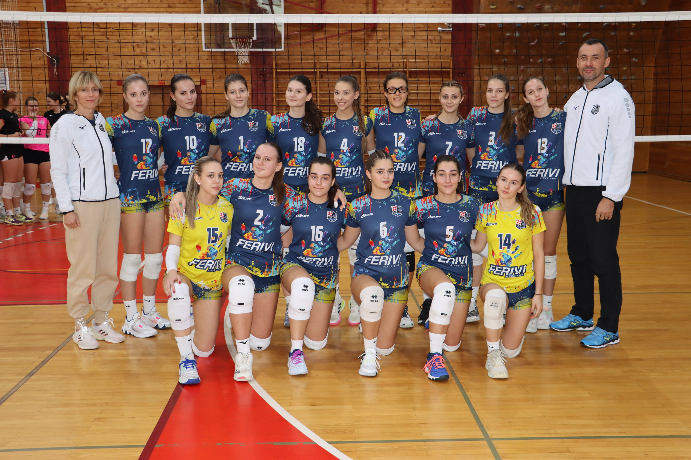

U srcu sportske strasti regije Istok, sjaji juniorska odbojkaška ekipa koja donosi svježu energiju i oduševljenje na teren. Sastavljena od četrnaest talentiranih i ambicioznih igračica rođenih 2005. godine i mlađih, ova ekipa predstavlja budućnost odbojke, natječući se hrabro u izazovnoj 2. ligi.
Natjecanje u 2. ligi - Regija Istok predstavlja izazov koji ova ekipa hrabro prihvaća. Svaki susret postaje prilika za stjecanje iskustva, razvijanje vještina i testiranje granica vlastitih mogućnosti. Treneri s pažljivim vođenjem prate svaki korak ovih mladih odbojkašica, potičući ih da pruže najbolje od sebe na terenu.
Osim sportskog uspona, ova juniorska odbojkaška ekipa gradi i snažne veze izvan terena. Njihova zajedništva i podrška jedna drugoj ključni su elementi uspjeha, stvarajući atmosferu gdje svaka igračica ima ulogu i doprinosi zajedničkom cilju.
Dok ova juniorska odbojkaška ekipa hrabro korača prema budućnosti, ostavljajući srce na terenu, zajednica s nestrpljenjem iščekuje svaki novi uspjeh. Svjedočimo formiranju nove generacije sportskih zvijezda, a ova ekipa predstavlja svjetlo koje obećava svijetlu budućnost odbojke u regiji Istok.
